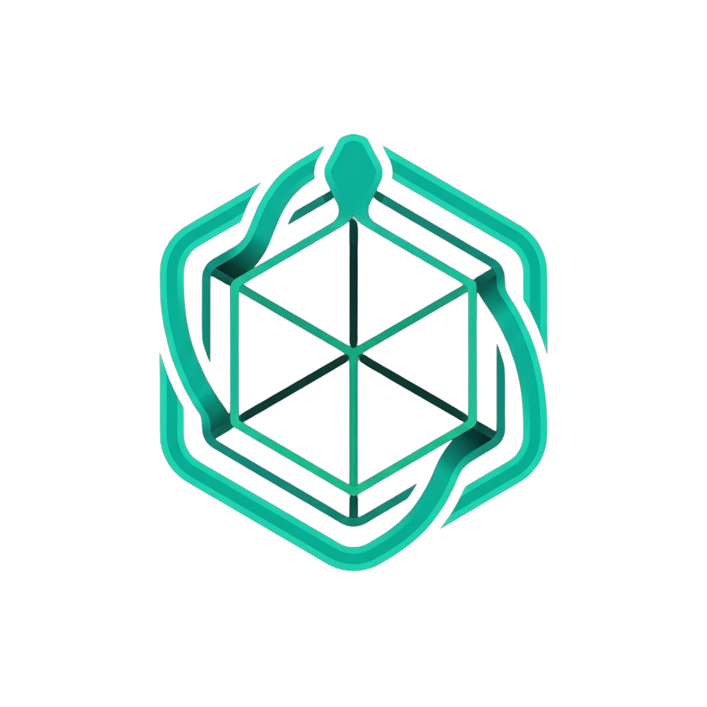
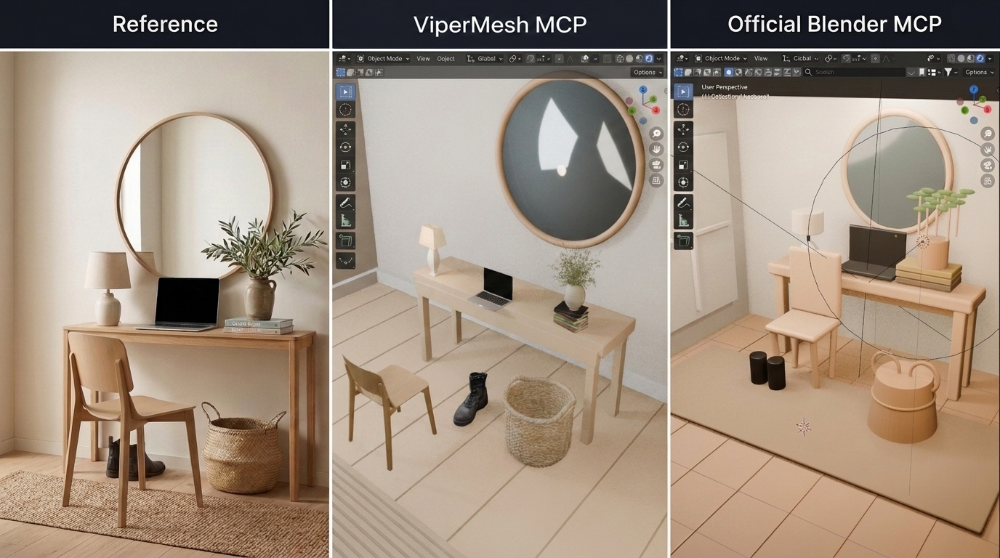

Use fewer AI tokens
Give your assistant ready-made actions for placement, materials, lighting and more. Covered edits need less newly generated Blender code.
Reusable actions / Less code to generate
ViperMesh for BlenderFree, open-source AI tools for Blender
Give your AI assistant ready-to-use Blender tools.
Designed for faster edits, fewer AI tokens and better results.
MIT licensedRuns locallyNo ViperMesh account
bootstrap_vipermesh_sessionConnectcall_blender_tool("get_scene_info")Inspectrun_blender_scene_stageBuild & reviewFor artists, hobbyists and game creators
Build, arrange and refine objects with your AI assistant.
Spend more time on the result, less on the steps to get there.
Give your assistant ready-made actions for placement, materials, lighting and more. Covered edits need less newly generated Blender code.
Reusable actions / Less code to generateThe connection stays open, and related edits can run together. Your assistant has simpler ways to act, with less repeated setup and back-and-forth.
One connection / Related edits togetherHelp your assistant catch floating objects, wrong orientations and spacing problems. Inspect the scene, review the image and fix what is off.
Scene checks / Visual reviewAlso helps with
A 72-second introduction
Your request, ready-made Blender actions, and a result you can inspect.
Send your goal in a compatible AI client. The assistant selects a ViperMesh tool and applies the edit in Blender. Common operations use object names and settings rather than newly generated editing code. Tools cover arrangement, materials and lighting, geometry and UV preparation, scene inspection, and export. Custom Python remains available for unusual work. The assistant still needs to check the result, including support, clearance and the rendered view. Reusing operations can reduce code generation and repair overhead; total savings vary. Install the free addon, connect your existing AI client, then work in Blender. AI provider access and token tracking are separate from the connector.
A real Blender scene comparison
Reference image, ViperMesh MCP, and the original BlenderMCP baseline.

The benchmark used its own guidance and available assets. The public addon does not bundle private Studio asset libraries.
Read the case study, Part One Full-size comparisonYour assistant. Your Blender workspace.
No ViperMesh account or hosted ViperMesh service is required. Your AI app may have its own costs. Docker is not needed for the standard local setup.
From download to first edit
Install the addon and connect your AI app using the steps below. You do not need to write Python for covered edits, but the initial setup is not yet one-click.
Tested target: Blender 5.2
Node.js 20 or newer · AI app with stdio MCP support
Download the versioned .py or .zip from the latest release. Install it from disk in Blender, enable it, then start the local bridge in the ViperMesh sidebar.
Download the MCPB bundle and import it into a compatible client. Node.js and the Blender addon are still required. See bundle setup and validation limits. Prefer the source route? Use these commands:
git clone https://github.com/Ker102/vipermesh-blender.git
cd vipermesh-blender
npm install
npm run buildLaunch node with the absolute path to the built server. This JSON is a common configuration pattern; your client's syntax may differ.
{
"mcpServers": {
"vipermesh-blender": {
"command": "node",
"args": ["/absolute/path/to/vipermesh-blender/dist/public-portable-blender-mcp.js"]
}
}
}Call bootstrap_vipermesh_session, inspect the scene, then discover the capabilities needed for your task. Keep the server running for the whole session, not one process per call.
Clear scope. Fewer surprises.
MCP means Model Context Protocol: a standard that lets compatible AI assistants use tools in an application. ViperMesh connects your assistant to Blender so it can inspect and edit your scene. The addon alone does not include an AI model.
ViperMesh builds on the original community project with a focus on reusable editing actions and scene checks. Both can inspect scenes and run Python. ViperMesh gives assistants ready-made tools for common edits, aiming to reduce generated code, save time and make results easier to check.
Read the comparisonThat is the design goal, not a guarantee for every task. Ready-made actions can reduce generated code and repeated steps. Tokens are the units of text an AI model reads and writes; total usage and final quality depend on your model, scene and request.
You can ask for covered scene edits in ordinary language without writing Python yourself. Import the MCPB bundle in a supported client, or build from source. You still need the separately enabled Blender addon, Node.js and a configured AI app. Custom requests may lead your assistant to use Python, which you should review when appropriate.
The addon lets an assistant operate Blender. It does not bundle a hosted text-to-3D model or promise production-ready assets. Use your own assets and Blender workflows.
Tools provide diagnostics and image-file checks. The agent still needs to inspect the visual output against your request. Bounds-based reports can miss mesh collisions or an artistic mismatch.
This is a trusted local connector, not a sandbox. Python fallback can execute arbitrary code inside Blender. Keep the bridge on loopback, use trusted clients, and review destructive actions.
Read the security guidanceThe public connector works independently. Studio is a broader artist-controlled AI workspace in development, bringing generation, asset inspection and specialist workflows together.
Join the Studio waitlistBuild it with us
Try a useful edit. Inspect the result.
Tell us what works and what needs a better tool.